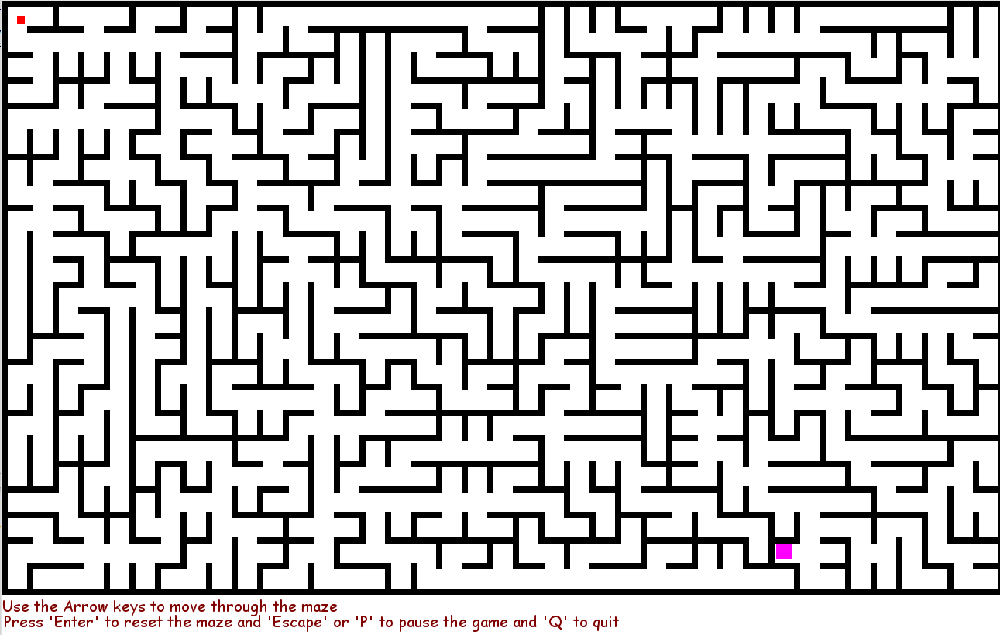

This project was created for a Database Systems class I took in second year. We were required to build a functional database management system for a company. For the project, I decided to build a Payroll System for Merge Industries (a fictional company created by myself). The aim of the project was to develop a functional database management system for Merge Industries to manage their manage the payroll activities of the company which comprises balancing and reconciling, depositing and reporting taxes, computing wage deductions, bonuses, overtime, reimbursements and holiday pay. Below is a picture of the project which contains the Entity-Relationship Diagram(ER Diagram):
This project is one of my favorites because it is actually my very first programming project. For this project, I modelled a maze game based no Prim's Algorithm. Though the project turned out great, it was difficult given my level of programming at the time but i am glad I never gave up. The game has controls for the player to move through the maze. The maze changes anytime the enter key is pressed. It was a fun project and it contributed greatly to my love for programming.